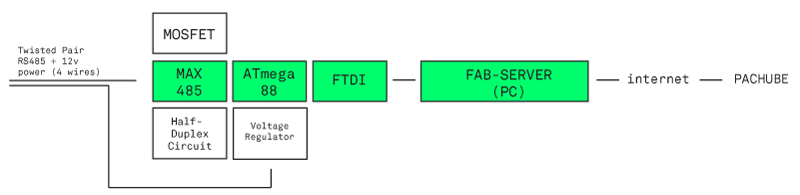
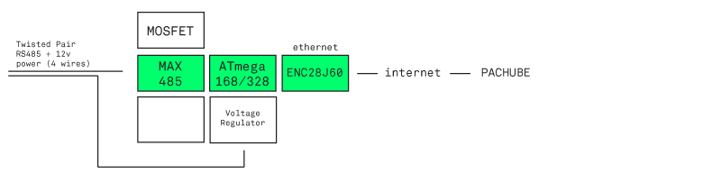

The aim of the project is to create a fabable energy meter that allows Fab Labs to know and share its energy cosumption. Because we want to know the detailed consumption of each device the system will be a network of small low-cost energy meters. The Pachube platform will be used to publish, share and backup the sensor readings.
PLANING
REFERENCES
DESIGN PROPOSALS

FINAL PROPOSAL
The Node
The Receiver / Bridge


FIRST TESTS

Meters at FABLABBCN
(((M))) = Meter
- 1.- B - Laser Cutter Multicam 2000 (((M)))
- 2.- B - Laser Cutter Spirit GE 100w
- 3.- B - Laser Cutter Epilog XT Legend 36 75w (((M)))
- 4.- B - 3 Axis Milling Machine Precix 11100 Series (((M)))
- 5.- B - 3 Axis Milling Machine Shop Bot
- 6.- M - 3 Axis Micro Milling Machine Roland Modela MDX-20 (x 2)
- 7.- M - Vinyl Cutter Roland GX-24 Camm Servo (x 2)
- 8.- M - 3D Printer Zcorp Z510
- 8.- M - 3D Printer Maker Bot Cup Cake CNC (MK4)
- 10.- M - 3D Printer Maker Bot Cup Cake CNC (MK5)
- 11.- M - 3D Printer Rep Rap Mendel
- 12.- M - 3D Printer / Multipurpose CNC Fab at Home
- ____
- 13.- Lights (((M)))
- 14.- Computers (+ Polycom, + Projector…) (((M)))